6.1. The Job-Shop Problem, the disjunctive model and benchmark data
We describe the Job-Shop Problem, a first model and the benchmark data. The Job-Shop Problem belongs to the intractable problems ( NP). Only few very special cases can be solved in polynomial time (see [Garey1976] and [Kis2002]). The definition of this fascinating problem is not that complicated but you probably will need some extra attention if this is your first encounter with it. Once you grasp its definition, the next subsections should flow easily.
6.1.1. Description of the problem
In the classical Job-Shop Problem there are  jobs that must be processed on machines.
Each job consists of a sequence of different tasks[1]. Each task needs to be processed during an
uninterrupted period of time on a given machine.
jobs that must be processed on machines.
Each job consists of a sequence of different tasks[1]. Each task needs to be processed during an
uninterrupted period of time on a given machine.
We use[2] to denote the  task of job
task of job  .
.
Given a set of jobs, a set  of machines and a set of tasks, we denote
by 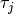 the number of tasks for a given job 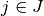. To each task corresponds
an ordered pair 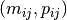: the task needs to be processed on machine 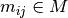
for a period of 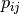 units of time.
of machines and a set of tasks, we denote
by 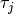 the number of tasks for a given job 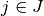. To each task corresponds
an ordered pair 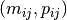: the task needs to be processed on machine 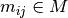
for a period of 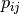 units of time.
Here is an example with machines and 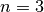 jobs. We count jobs, machines and tasks starting from 0.
- job 0 = 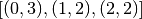
- job 1 = 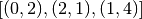
- job 2 = 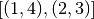
In this example, job 2 consists of 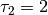 tasks: task which must be processed on machine  during 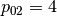 units of time and task which must be processed on machine 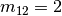
during 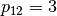 units of time.
during 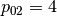 units of time and task which must be processed on machine 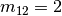
during 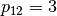 units of time.
To have a Job-Shop Problem, the tasks must be processed in the order given by the sequence: for job 0 this means that task on machine 0 must be processed before task on machine 1 that itself must be processed before task on machine 2. It is not mandatory but most of the literature and benchmark data are concerned by problems where each job is made of tasks and each task in a job must be processed on a different machine, i.e. each job needs to be processed exactly once on each machine.
We seek a schedule (solution) that minimizes the makespan (duration) of the whole process.
The makespan is the duration between the start of the first task (across all machines) and the completion of the last task (again across all machines). The classical notation for the makespan is .
Let’s define 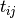 as the starting time of the processing of task .
The makespan can be defined as
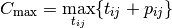
or equivalently as the maximum time needed among all jobs to be completely processed. Recall that
denotes the number of tasks for job and that we count starting from 0. 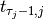 denotes thus
the starting time of the last task of job and we have
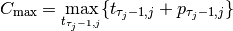
Let’s try to find a schedule for our example. Suppose you want to favour job 1 because you did see that all jobs have the same processing time (7) and that job 1 has its last task requiring 4 units of time. Here is the Gantt chart of a possible schedule:
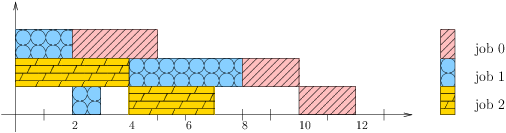This is a feasible schedule since tasks within every job are processed one after the other in the right sequence and each task is processed on the right machine. The makespan is 12 units of time. Can we do better? Focusing on one job is probably not the best strategy. Here is an optimal solution:
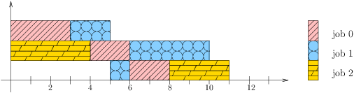Its makespan is 11 units of time.
How can we simply describe a schedule? We defined as the starting time of task . A feasible schedule can then be defined as a set[3] of non negative integers 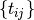 such that the definition of a Job-Shop Problem is respected. If we only consider schedules where all tasks are completely left shifted on the Gantt chart[4], we can define a feasible schedule by giving the sequence of jobs processed on each machine.
The first schedule can be described by:
- Machine 0: job 1, job 0
- Machine 1: job 2, job 1, job 0
- Machine 2: job 1, job 2, job 0
and the second optimal one by
- Machine 0: job 0, job 1
- Machine 1: job 2, job 0, job 1
- Machine 2: job 1, job 0, job 2
The Gantt chart offers a nice visualization of schedules but it doesn’t really give any insight into the problem[5]. The disjunctive graph allows a better understanding of the structure of the problem.
6.1.2. The disjunctive graph
The figure A disjunctive graph. represents the disjunctive graph of our example.
A disjunctive graph.
The disjunctive graph is 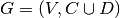 where
- is the set of vertices corresponding to the tasks. Two fictive vertices
and are added to
- represent the start and end times. Each vertex has a weight corresponding to the processing time of the task it represents. Vertices
- is a set of conjunctive arcs between the 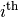 and 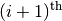 tasks of a job.
- We also add conjunctive arcs from
- is a set of disjunctive arcs between tasks to be processed on the same machine.
- These arcs are dotted or dashed in the figure.
To determine a schedule we have to define an ordering of all tasks processed on each machine. This can be done by orienting all dotted or dashed edges such that each clique corresponding to a machine becomes acyclic[6].
Our first schedule is represented in the next figure.
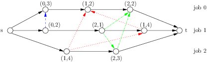We also want to avoid cycles between disjunctive and conjunctive arcs because they lead to infeasible schedules. A feasible schedule is represented by a directed acyclic disjunctive graph. In fact, the opposite is also true. A complete orientation of the edges in defines a feasible schedule if and only if the resulting directed disjunctive graph is acyclic.
The makespan is given by the longest weighted path from to . This path - thickened in the next figure -
is called the critical path.
Its length is .
We can now define the Job-Shop Problem as a graph problem: find a complete
orientation of the edges of a disjunctive graph such that the resulting directed graph is acyclic and the longest weighted path
from to is minimized. We will use this representation of the problem to design our model.
6.1.3. The disjunctive model
This model is a straightforward translation of the definition of a Job-Shop Problem and its disjunctive graph representation.
We again rely on the The three-stage method: describe, model and solve. What are the decision variables?
We use the variables to store
the starting time of task  of job . We could use two fictive variables corresponding to the fictive
vertices and but this is not necessary.
of job . We could use two fictive variables corresponding to the fictive
vertices and but this is not necessary.
To simplify the notation, we will use the notation 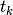 where  denotes a vertex (a task)
of the disjunctive graph. We use the same simplified notation for the processing times () and the machine ids ().
denotes a vertex (a task)
of the disjunctive graph. We use the same simplified notation for the processing times () and the machine ids ().
What are the constraints? In the disjunctive graph, we have two kind of edges to model a feasible schedule:
conjunctive arcs modelling the order in which each task of a job has to be processed:
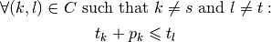
These constraints are called conjunctive constraints.
disjunctive edges modelling the order in which tasks have to be processed on a single machine:
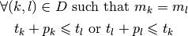
These constraints are called disjunctive constraints. They forbid cycles in a clique corresponding to a machine[7].
What is the objective function? The objective function (the makespan) doesn’t correspond to a variable of the model. We have to construct its value. Because we minimize the makespan, we can use a little trick. Let be the set of all end tasks of all jobs. In our example, 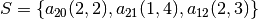. The makespan must be greater than the overall time it takes to process these tasks:
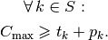
Here is the model[8]:
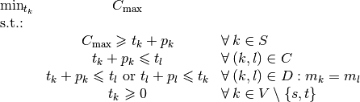
We will implement and solve this model in the next section but first we need to read and process the data representing instances of Job-Shop Problems.
6.1.4. The data and file formats
To collect the data, we use two different file formats: JSSP and professor Taillard’s format. In the directory data/jobshop, you can find data files for the Job-Shop Problem[9]. The file jobshop.h lets you read both formats and store the data into a JobshopData class. We will use this class throughout this chapter.
JSSP stands for Job Shop Scheduling Problem. Let’s consider the beginning of file abz9:
+++++++++++++++++++++++++++++
instance abz9
+++++++++++++++++++++++++++++
Adams, Balas, and Zawack 15 x 20 instance (Table 1, instance 9)
20 15
6 14 5 21 8 13 4 11 1 11 14 35 13 20 11 17 10 18 12 11 ...
1 35 5 31 0 13 3 26 6 14 9 17 7 38 12 20 10 19 13 12 ...
0 30 4 35 2 40 10 35 6 30 14 23 8 29 13 37 7 38 3 40 ...
...
The first line of real data is
20 15
This instance has 20 jobs to process on 15 machines. Each job is composed of exactly 15 tasks.
Each job corresponds to a line:
6 14 5 21 8 13 4 11 1 11 14 35 13 20 11 17 10 18 12 11 ...
Each pair corresponds to a task. For this first job, the first task needs 14 units of time on machine 6, the second task needs 21 units of time on machine 5 and so on.
As is often the case, there is a one to one correspondence between the tasks and the machines.
6.1.4.1. Taillard’s format
Let’s consider the beginning of file 20_5_01_ta001.txt:
20
5
873654221
0
468
54 79 16 66 58
1
325
83 3 89 58 56
2
923
15 11 49 31 20
3
513
71 99 15 68 85
...
This format is made for flow-shop problems and not job-shop problems. The two first lines indicate that this instance has 20 jobs to be processed on 5 machines. The next line (873654221) is a random seed number. The jobs are numbered from 0 to 19. The data for the first job are:
0
468
54 79 16 66 58
0 is the id or index of the first job. The next number is not important for the job-shop problem. The numbers in the last line correspond to processing times. We use the trick to assign these times to machines 0, 1, 2 and so on. So job 0 is actually
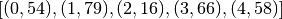
Because of this trick, one can not easily define our problem instance above in this format and we don’t attempt to do it.
You can find anything you ever wanted to know and more about this format in [Taillard1993].
6.1.4.2. JobshopData
The JobshopData class is a simple container for job-shop problem instances. It is defined in the file jobshop.h. Basically, it wraps an std::vector<std::vector<Task> > container where Task is a struct defined as follows:
struct Task {
Task(int j, int m, int d) : job_id(j), machine_id(m), duration(d) {}
int job_id;
int machine_id;
int duration;
};
Most part of the JobshopData class is devoted to the reading of both file formats.
The data file is processed at the creation of a JobShopData object:
explicit JobShopData(const string& filename) :
...
{
FileLineReader reader(filename_.c_str());
reader.set_line_callback(NewPermanentCallback(
this,
&JobShopData::ProcessNewLine));
reader.Reload();
if (!reader.loaded_successfully()) {
LOG(FATAL) << "Could not open job-shop file " << filename_;
}
To parse the data file and load the tasks for each job, we use a FileLineReader (declared in base/filelinereader.h). In its Reload() method, it triggers the callback void ProcessNewLine(char* const line) to read the file one line at a time
The public methods of the JobShopData class are
the getters:
- machine_count(): number of machines;
- job_count(): number of jobs;
- name(): instance name;
- horizon(): the sum of all durations (and a trivial upper bound on the makespan).
- const std::vector<Task>& TasksOfJob(int job_id) const: returns a reference to the corresponding std::vector<Task> of tasks.
two methods to report the content of the data file parsed:
void Report(std::ostream & out); void ReportAll(std::ostream & out);
Just for fun, we have written the data file corresponding to our example above in JSSP format in the file first_example_jssp.txt:
+++++++++++++++++++++++++++++
instance tutorial_first_jobshop_example
+++++++++++++++++++++++++++++
Simple instance of a job-shop problem in JSSP format
to illustrate the working of the or-tools library
3 3
0 3 1 2 2 2
0 2 2 1 1 4
1 4 2 3
The ReportAll() method outputs:
Job-shop problem instance in JSSP format read from file
first_example_jssp.txt
Name: tutorial_first_jobshop_example
Jobs: 3
Machines: 3
==========================================
Job: 0
(0,3) (1,2) (2,2)
Job: 1
(0,2) (2,1) (1,4)
Job: 2
(1,4) (2,3)
The file report_jobshopdata.cc contains a simple program to test the content of data files for the Job-Shop Problem.
Footnotes
| [1] | Tasks are also called operations. |
| [2] | We use a slightly different and we hope easier notation than the ones used by the scheduling community. |
| [3] | And a correspondence rule between those integers and the tasks. |
| [4] | A rigorous definition of schedules where all tasks are completely left shifted on the Gantt chart is beyond the scope of this manual. In scheduling jargon, such schedules are called semi-active schedules. |
| [5] | Except if you see the disjunctive graph in the Gantt chart! |
| [6] | An acyclic graph is a graph without cycle. It can be shown that a complete directed acyclic graph induces a total order on its vertices, i.e. a complete directed acyclic graph lets you order all its vertices unequivocally. |
| [7] | Here is why. Consider the following situation 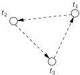We have 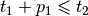, 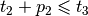 and 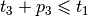. Add these three inequalities and you obtain 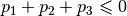. This is impossible if one of the is greater than 0 as every 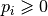. |
| [8] | It is not obvious that this model produces optimal solutions that are feasible schedules but it can be shown that it does. |
| [9] | We copied the files abz9 and 20_5_01_ta001.txt in the directory manual/tutorials/cplusplus/chap6 for your convenience. |
Bibliography
| [Garey1976] | Garey, M. R., Johnson, D. S. and Sethi, R., The complexity of flowshop and jobshop scheduling, Mathematics of Operations Research, volume 1, pp 117-129, 1976. |
| [Kis2002] | Kis, T., On the complexity of non-preemptive shop scheduling with two jobs, Computing, volume 69, nbr 1, pp 37-49, 2002. |
| [Taillard1993] | Taillard, E., 1993. Benchmarks for basic scheduling problems, European Journal of Operational Research, Elsevier, vol. 64(2), pages 278-285, January. |
Google or-tools |
User's Manual
Google search
Welcome
Tutorial examples
Current chapter
6. Local Search: the Job-Shop Problem
Previous section
6. Local Search: the Job-Shop Problem
Next section
6.2. An implementation of the disjunctive model